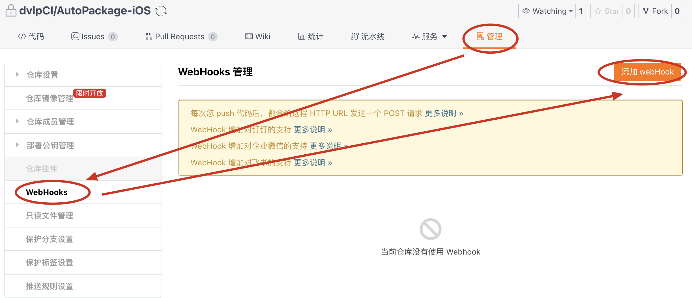

title: 常见痛点
date: 2019-01-10 11:35:46
categories:
[toc]
在Swift中，struct（结构体）和class（类）都是创建自定义数据类型的方式，它们都支持许多相同的功能，例如属性、方法、下标、初始化、扩展以及协议。但是，它们之间也存在一些关键的区别：
存储和内存管理：
struct 是值类型，意味着当你将一个结构体赋值给一个变量或者作为参数传递给函数时，它的值会被复制。这使得结构体在多线程环境下更安全，因为它们的值不会意外地被改变。class 是引用类型，意味着当你将一个类的实例赋值给一个变量或者作为参数传递给函数时，你实际上是传递了一个指向对象内存地址的引用。因此，多个变量可能引用同一个对象，并且任何对该对象的修改都会影响到所有引用它的变量。继承：
class 支持继承，这意味着你可以创建一个新类来继承一个现有类的属性和方法。struct 不支持继承，因为它们是值类型，继承可能会引入复杂的内存管理问题。方法重写：
class中，你可以重写父类的方法。struct中，你不能重写方法，但你可以使用方法重载（方法签名不同）。let person1 = Person(name: "John")
// 将person1赋值给另一个变量person2、// 将person1赋值给另一个变量person2
let person2 = person1
person2.name = "Jane"
class: person1和person2都指向同一个Person实例，当person2的name属性被修改时，person1的name属性也会随之改变。
struct:person1和person2是两个不同的Person实例。当person2的name属性被修改时，person1的name属性保持不变，因为结构体是值类型，赋值操作会创建一个新的实例副本。
在 Swift 中，struct 和 class 的复制行为是不同的：
struct 时，你得到的是原始数据的深复制（deep copy）。这意味着新变量和原始变量之间没有共享任何数据。对新变量所做的任何修改都不会影响原始变量。class 来说，复制行为取决于你是如何实现复制的。如果你只是使用赋值操作符（=），那么新变量和原始变量会指向同一个对象，这意味着它们共享相同的内存地址，并且任何对新变量的修改也会影响原始变量（浅复制）。但是，如果你实现了 NSCopying 协议并提供了一个 copy(with:) 方法，那么你可以控制复制行为，实现深复制。总结来说，struct 默认是深复制，而 class 默认是浅复制，但可以通过实现 NSCopying 协议来改变这个行为。
在Flutter开发中，列表页图片在返回时刷新是一个常见的问题，这通常是因为图片资源被释放或重建导致的。
1、图片没缓存？ 使用有缓存功能的图片库 cached_network_image
2、缓存空间太小释放了？->
图片太大导致缓存空间不够？ -> 图片数据万象，加载空间优化
图片视图重建：图片加载动画导致的？-> 未列表项增加唯一的key标识符，重用
Flutter中的列表项
Key与iOS中UITableView的reuseIdentifier在概念上类似，但它们的使用和行为上有一些差异。以下是两者的主要区别：唯一性要求：iOS：在UITableView中，reuseIdentifier（重用标识符）是用于指定一个可重用的单元格的。同一个reuseIdentifier可以被多个单元格共用，只要它们是相同类型的单元格。系统通过reuseIdentifier来识别和重用单元格，而不是通过它来区分不同的单元格。Flutter：每个列表项的Key必须是唯一的。如果两个列表项使用了相同的Key，Flutter会抛出异常，因为它违反了Key的唯一性原则。Key的唯一性确保了框架能够正确地识别和重用列表项。flutter与iOS的重用区别：iOS列表的重用标识符
reuseIdentifierVS Flutter列表的唯一的Keyreturn TIMUIKitGroupTrtcTipsElem( key: ValueKey(messageItem.msgID), // 使用key可以帮助Flutter识别哪些列表项是重复的，从而避免不必要的重建，提高性能。 customMessage: messageItem, );在iOS中，
UITableView通过重用标识符（reuseIdentifier）来重用离开屏幕的单元格。当单元格滚动出屏幕时，它们会被放入一个重用队列中，当需要新的单元格时，系统会尝试从这个队列中获取一个已经存在的单元格，而不是每次都创建一个新的单元格。在Flutter中，虽然没有直接的重用标识符概念，但是通过为每个列表项指定一个唯一的
Key，可以帮助Flutter识别哪些列表项是相同的，从而实现重用。当列表项离开屏幕并且需要重新进入屏幕时，如果它们有相同的Key，Flutter会重用这些项，而不是重新创建它们。这可以减少不必要的widget重建，从而提高性能。当用户滚动列表时，不可见的列表项（列表项离开屏幕时）会被”回收”，此处是回收站概念，并不意味着它们完全被销毁；因为Flutter的列表组件使用一种称为“虚拟滚动”的技术，这意味着它们除保留当前屏幕上可见的列表项外，还可能额外保留一些列表项以提高滚动性能，具体是否有保留Flutter系统会根据当时的内存使用情况等处理，即不代表未设置cacheExtent，因其默认值是0，而就说离开屏幕的列表项就会被销毁。
当用户滚动列表，使得之前不可见的项目再次变得可见时，Flutter会检查是否已经有一个具有相同
Key的项目在内存中。如果找到了，Flutter将重用这个项目，而不是创建一个新的，即从之前的回收站里重新使用。（附：Flutter的
ListView（包括ListView.builder）使用了一种“懒加载”机制，这意味着它只会构建和渲染当前可见的列表项，而不是一次性构建所有列表项。）如果还希望提高滚动性能，可以在Flutter的
ListView或类似的滚动组件中设置addAutomaticKeepAlives: false和addRepaintBoundaries: false时，你实际上是在告诉Flutter框架不要为列表项自动添加保持活动状态（keepalive）或重绘边界（repaint boundaries）。虽然都设置成了flase，但不代表当列表项再次滚动回屏幕时，一定会重建。它只是增加列表项在滚动回屏幕时重建的可能性，但是否一定会重建还取决于其他因素。比如列表项有唯一的Key，就不会重建，而是重用它们。
内存：图片大小卡顿、视频压缩崩溃、
原理：js -> native （swizzed）
页面加载优化
列表优化、图片优化、内存优化、web资源优化、卡顿优化
web
大文件上传优化、
内容发布崩溃：
class ImageCompressUtil {
/// 异步压缩所添加的文件
static Future compressMediaBeans<T extends ImageChooseBean>(
List<T> addMeidaBeans,
) async {
int count = addMeidaBeans.length;
for (var i = 0; i < count; i++) {
T bean = addMeidaBeans[i];
_log("bean.assetEntity.id=${bean.assetEntity?.id} begin...");
bean.checkAndBeginCompressAssetEntity();
if (i < count - 1) {
// 异步压缩，并且不是最后一个时候,每个压缩间隔一下,防止内存还没释放,导致积累过多崩溃
await Future.delayed(const Duration(milliseconds: 500));
}
_log("bean.assetEntity.id=${bean.assetEntity?.id} finish...");
}
}
}
webview白屏 –> 白屏使用可使用不存在WKCompositingView类型的视图来检测 –> webview中的WKCompositingView视图也是用做同层渲染的原理 –> 同层渲染的场景：有个话题活动页，页面上有一个已经用原生方式实现过列表。（h5说还要实现列表开发来不及，原生说这种活动用原生做一遍到时候还得废弃，无用功。所以折中页面还是网页实现，但列表部分用web同层渲染替换成原生。）更多使用可参考微信小程序。 –> 如果页面上这是小部分内容需要用html，则可以用原生的lable或textview等显示html富文本，如iOS的iOS中支持HTML文本的标签控件——MDHTMLLabel 和 flutter_html 。iOS UITextView 加载 HTML 时的问题与优化 。注意此场景不适合将该部分使用单独的webview显示，效果不好。 –> 插入说明，如果前面那个列表是h5实现的，由于已经晓得它和原生实现过的一样，那这两个地方的列表内容肯定重合度高，尤其是图片，进而导致同一张图片已经在原生加载过了，还得在h5上再加载一遍，而影响加载效率，所以可以考虑对h5中的图片通过WKURLSchemeHandler 进行拦截，使其直接使用原生中的图片。
错误
web白屏、
问题复现：
在iOS开发中，崩溃排查是常见的问题解决过程。以下是一个典型的崩溃排查案例，包括遇到的困难和解决方法：
遇到的问题： 在一次版本更新后，用户开始报告应用在浏览图片时偶尔会出现崩溃。崩溃日志显示是EXC_BAD_ACCESS错误，但具体的堆栈跟踪信息不是很清晰，没有直接指向崩溃的代码行。
困难：
解决方法：
atos工具对崩溃日志进行符号化，获取更详细的堆栈跟踪信息。通过这个过程，我们不仅解决了崩溃问题，还增强了代码的稳定性和测试覆盖率。在处理iOS崩溃问题时，耐心和细致的调试是关键，同时，良好的日志记录和崩溃监控系统也能帮助快速定位和解决问题。
公司业务转型，融资待岗
个人优势：
slogan：做一个的项目，而不仅仅是能跑没问题的项目。
十年移动端开发，拥有千万级用户app开发经验及团队管理经验(>10人)；
丰富的面向对象编程经验，精通常用设计模式；熟练数据库、多线程开发；
熟练模块化，精通组件开发，有丰富的SDK开发经验；
具有多媒体应用、视频直播、IM即时通讯等相关开发经验；
丰富的页面加载体验优化经验，页面关键内容”秒显”；
擅长图片加载优化、网络请求优化，减少加载时间，提升渲染速度；
优秀的跨平台开发能力，熟练掌握iOS与H5的混合开发及React Native、Flutter等跨平台技术；
熟练运用shell、python脚本语言，进行各种自动化打包、信息提取等处理，简化重复性工作，提高开发和运维效率；
敏锐的问题预见与解决能力，提前发现潜在问题并处理，确保项目的顺利进行和高质量输出；
良好的自驱和追求卓越力，不断对项目进行优化，让应用体验更好。
wcdb 相比fmdb
WCDB提供了ORM的功能，将类的属性绑定到数据库表的字段。在日常实践中，类的属性名和表的字段名通常不一致。因此，WCDB提供了WCDB_SYNTHESIZE_COLUMN(className, propertyName, columnName)宏，用于映射属性名。
易用：对于等价的功能，WCDB所需的代码量往往会比FMDB少很多。而更少的代码量通常意味着更快的开发效率和更少的错误。
性能：更好
业绩：
- APP安全合规上架成功率75%->100%；
- 页面加载用户体验的全面优化，”秒显”用户关心的页面内容；
- 应用内Cocoas游戏优化，平均打开时间3000ms->300ms；
- 监控系统开发和问题处理，错误率81%->3%，崩溃率<0.03%；
- 风险设备识别，减少公司被薅羊毛的经济损失。
- 移动端js自测平台开发，与游戏和web交互工作的闭环效率提升50%+。
- 自动化打包扩展，打包资源有效利用率提高99%+，测试前的沟通成本减少90%+，测试效率侧面提升10%+；
1.对APP启动流程进行重构规范，彻底解决安卓用户隐私协议前的安全合规问题，APP上架成功率75%->100%；
2.对主页、首页等重要页面以及列表等进行预加载，减少用户等待时间，提高应用的响应速度和用户体验。对列表进行预加载、按需加载优化，实现丝滑的无限滚动列表；
3.对图片进行万象优化，提高图片加载速度，减少图片磁盘占用；解决底层库在图片高磁盘占用情况下的卡顿问题；
4.对页面加载的用户体验进行全面优化，让用户关心的页面内容达到”秒显”效果。
5.制定网络的弱网优化、加密优化方案，使得网络处理又快又安全。
6.搭建页面框架、路由框架，统一规范，提高开发效率。
7.发掘和注重用户体验的持续改进，通过迭代设计和功能增强，让应用使用更加便捷和高效。如大文件上传优化，视频封面截取，视频边下边播、视频预加载、打赏礼物优化、视频播放中暗掉等问题。
8.对承载Cocoas游戏的WebView进行整体优化，解决游戏加载慢、白屏、发热、并实现秒开，让用户对游戏的体验得到一个质的提升。
9.开发移动端的js自测平台，有效提升与游戏和web交互工作的闭环效率50%+。
10.搭建并扩展自动化打包工程，编写shell、python等脚本，进行打包前分支允许性、完整性的检查，避免无效包的产生，减少打包资源的浪费（提高打包资源的有效利用率）；打包时分支功能信息的采集和整理，并及时输出日志，避免多余功能的合入，让测试人员更直观对安装包内容进行测试，减少测试前的沟通成本达90%+。；同时加入测试进度，让开发负责人更能及时了解和跟进当前测试进度，侧面的促进了测试效率的提升10%+。
11.捕获并及时抛出异常，提高开发人员对异常的关注和处理率，保证了代码质量。同时进行空安全升级，提前发现潜在问题，将错误率从81%降到3%。修复崩溃问题，崩溃率<0.03%
12.建立埋点框架，提供埋点数据(曝光)，帮助产品分析用户行为，优化产品体验。
13.建立日志系统，提高各类问题的定位效率，节省了不必要的调试和沟通成本。通过滚动存储、日志回捞，进一步帮助开发人员对极限问题的排查处理。
14.建立灰度系统，实现应用内功能回滚，有效避免集体性功能异常问题的发生。
15.进行风险设备识别（数美、同盾），减少公司被薅羊毛的经济损失。
16.实现各种开发工具，并保证开发工具的安全性。
5.制定网络的弱网优化、加密优化方案，使得网络处理又快又安全；
6.整个项目开发规范的统一，提高开发效率和维护性；
7.发掘和注重用户体验的持续改进，让应用使用更加便捷和高效。
12.建立埋点框架，提供埋点数据(曝光)，帮助产品分析用户行为，优化产品体验。
13.建立日志系统，提高各类问题的定位效率，节省了不必要的调试和沟通成本。通过滚动存储、日志回捞，进一步帮助开发人员对极限问题的排查处理。
16.实现各种开发工具，并保证开发工具的安全性。
码上格言slogan：做一个好的项目，而不仅仅是能跑没问题的代码。
1、搭建项目结构。其主要的组成部分有：应用入口、资源文件、三方SDK、工具类、功能模块（数据管理中心+业务功能）等。
2、在功能模块中，每个模块有独立的数据层(manager)和业务层。模块内：按照MVC、MVVM+S等设计模式。模块间：模块化方案、依赖注入？；
文档：《架构模式-①概览.md》、《架构模式-④MVC与MVVM.md》、《5框架设计模式-⑦组件化.md》、《设计模式-①概览.md》
架构的演变
用户在view上的操作，会通过vm对model进行数据的修改；
数据的修改引起的属性变化会通知到vm上；
vm根据变化进行view UI的更新；
组件化的各种方案、系统通知的优化方案
发布订阅模式的实现方式：类似Notification（页面需要订阅数据变化、线程管理
3、页面内结构设计(与用户数据管理模块进行模块化通信)
页面执行自己的动作，调用Service服务类。无需关心数据请求、数据请求结束后是否需要缓存等等。
Service服务中心，内部包含请求和可能的数据存储等处理，不对外暴露。
4、容灾能力
异常捕获/监控（自研、bugly）、埋点、日志预警、应用内回滚、灰度发布
5、自动构建与持续集成
6、分支管理
定义共享行为：当你有多个不同的类需要实现相同的行为，但这些类之间没有继承关系时，可以使用协议来定义共享的行为。eg：磁盘和内存的存储行为。网络请求行为定义；场景：遵循协议定义行为的实例可被其他也同样遵循协议的实例替换，这种替换满足了开闭原则：对扩展开放，对修改封闭。里氏替换原则:应用程序中任何父类对象出现的地方，我们都可以用其子类的对象来替换，并且可以保证原有程序的逻辑行为和正确性。因为这里父类是抽象类，所以肯定遵守里氏替换原则。
解耦：当你想要解耦组件，使得组件之间的依赖关系更加松散时，面向协议可以提供帮助。使用场景：模块化；
月OKR
对xxx进行yyy，
OOM 内存泄露
怎么保障一个项目的稳定性？
稳定性：崩溃
通过runtime及消息转发机制，提高项目容错性和稳定性。同时接入Bugly，发现并解决真机在生产环境下可能出现的问题，提高产品的质量，保证用户的体验。
通过多线程、GCD、队列、信号量Semaphore等解决项目中的多任务问题。如解决讯飞语音的顺序播放，使收到的信息能够顺序且完整的播报，而不会因为新信息的提前播报使得旧信息播报未全或者丢失等情况。
旧：原本启动流程中各种三方库的初始化顺序不是太严谨。安全合规的错误根源：同意用户协议前有些三方库有概率①去调用获取设备敏感信息AndroidID，因为安卓未同意隐私政策前不可获取deviceId（其中也包含我们的业务接口需要上报deviceId）；②调用获取粘贴板内容。通讯录？
新：同意用户协议前，避免其他三方库去调用获取敏感信息的可能。即三方库初始化统一到同意用户协议之后。至于网络库是否也放到同意协议后可用有两种方式，其中如果不放到同意协议后，则一定要注意获取敏感信息的时候一定要增加判断是否同意了协议。
文档：《网络框架.md》、《分享业务规范.md》粘贴板？、短链？
流程图：《网络框架的一生.graffle》中的【一、网络与用户协议流程】
进行Android加固，构建安全的APP安装包，解决上架及软件管理局
iOS APP安全加固方案(一、代码混淆CodeObfuscation)
github CJStandardProject 项目中的 CodeObfuscation
在系统网络授权弹窗基础上，加入自定义的网络引导设置弹窗，提升用户网络设置的体验。
要点：系统网络权限弹窗机制：有代码执行到网络相关事项时候才会系统自动弹出。常见的场景：1监听网络状态变化；2进行任一网络请求。
文档：《列表优化.md》、iOS视频列表滚动自动播放的实现（Swift）
主页：通过 vm / manager 预加载数据
列表：监听滚动的滑动距离，判断阈值，提前加载下一页数据（阈值的变化逐渐增长var threshold = (curPageIndex+0.7)/(curPageIndex+1.0)，页数越大，越靠近1.0）。滚动过程不加载图片、滚动结束加载。
三个player
锁
ListView.builder会按需构建列表元素，也就是只有那些可见得元素才会调用itemBuilder 构建元素
只加载与视图大小相近的合适图片，避免下载的图片太大而占用磁盘空间。
设置阶梯，避免同一张图片加载的规格太多份，而导致占用不必要的磁盘空间。
真出现图片导致的高磁盘占用引起下滑卡顿时候，通过fork图片库，修改图片的保存路径，使其根据图片 URL 的 MD5 值进行散列，然后根据这个散列值来创建子目录和文件名，从而在磁盘上形成一个树状的目录结构。为了避免生成的文件夹数量太多，可以使用一致哈希算法进行优化和方便以后扩展。
磁盘大小的其他优化：图片缓存池、删除掉ttf字体文件
卡顿的检测可用FPS来衡量（CADisplayLink计算），《性能监控-①卡顿监控.md》，也可用主线程卡顿监控的方案（如果发现主线程runloop的状态卡在为BeforeSources或者AfterWaiting超过88毫秒时，即表明主线程当前卡顿。）。
iOS内存泄露的定位：Analyze 静态分析 和 Leak工具内存泄露检查，以及 MLeaksFinder 库内存泄露检查方式。
文档1：《图片框架.md》
文档2磁盘：《高磁盘占用的排查与优化.md》
文档3内存：《2内存-③内存泄漏定位.md》、《app内存问题.md》
离屏渲染：
https://github.com/SDWebImage/SDWebImage
文档：《页面加载体验优化.md》
问题背景：前期后台网络接口耗时长，导致页面初始的空白时间很长。
从页面进入开始优化到内容渲染完成。
其他：网路质量的获取？页面加载时长？技术选型？
2.1、对图片进行万象优化，见上文
2.2、对接口进行缓存优化，见下文
快：①网络缓存；②弱网情况下加载低质量的图片，当然有缓存的情况下还是优先取缓存。③ip直连，可以省去请求时候的dns解析，节省部分请求时间。
安全：通过RSA+AES进行数据的加密。
弱网优化，请查看我的另一篇文章：《弱网优化空间探索.md》
4、处理各种安全问题：设计网络接口加密方案，为数据安全保驾护航。
文档：《网络框架.md》、《网络加密.md》、《网络耗时及其优化.md》
流程图：《网络框架的一生.graffle》中的【三、网络缓存优化】、《网络加密.graffle》
生命周期？？？
viewDidAppear、viewDidDisappear1、页面跳转
同级页面跳转(tab切换)：
visibility_detector不同级页面跳转：
监视页面的切换(RouteObserver & RouteAware)的didPop\didPopNext、didPush\didPushNext2、App 的生命周期(前后台切换)：
WidgetsBindingObserver的@override void didChangeAppLifecycleState(AppLifecycleState state)
拦截器???
《路由规范(含点击属性规范).md.md)》
文档：《视频优化.md》、《文件分片上传与分片下载.md》
添加视频封面功能，从视频中截取封面流程，实现丝滑的任意位置视频帧获取。（核心：上面是视频，下面进度条变化时候相当于seek视频）
优化大文件的上传：添加断点续传功能，
加载慢：
| 阶段 | 优化方案 | |
|---|---|---|
| (初次/重复)打开时，加载慢 | webview提前(尽可能多的)初始化+全局化 | |
| 加载中，加载慢 | 拦截加载自定义图片(webview_flutter暂不支持) |
加载慢：游戏自身加载慢的问题原因：游戏首屏请求太多，下载资源太多，未分帧。使用不再维护的cocos2d缺少cocos对web的优化。
接受游戏自身问题导致的加载慢，但避免每次进入游戏都慢。游戏的游戏首页能否提前初始化：不能。app只是个游戏链接，不涉及到游戏引擎的加载。
发热：离开web游戏页面停止计时器、停止渲染
白屏：回前台时候通过app调用js方法做web白屏检查，若白屏执行reload。也可以通过webview截图 ==> 缩放图片，为了减少待会遍历的像素点 ==> 遍历像素点，判断白色像素占比超过95%则认定为白屏。在iOS上还可以通过 webView的子视图WKCompositingView 存不存在来判断白屏。
文档：《WebView优化.md》、《app发热问题.md》
js注入：在页面指定位置（top(默认) \ bottom \ overlay）注入按钮
《WebView优化.md》中【四、使用中的交互】
WKWebView 注入js代码： 001-UIKit-CQDemo-Flutter 中的 flutter_webview_kit
js调试
js 规范：code msg result
webview声音？
建立分支合并规范(分支创建工具)，
打包日志并加入打包信息，。
打包资源的利用率，缺少经常新发布的缺少主功能（之前的分支很早就开出来），缺少上次打包的内容（打包的不是打包的分支，只是单个功能的分支），蒲公英包缺少合入蒲公英功能的分支代码；
搭建移动端日常自动化
文档：《Git Rebase.md》
脚本：https://github.com/dvlpCI/script-branch-json-file 、 https://github.com/dvlpCI/script-qbase
游戏toast 提取脚本
Webhook
Webhook的工作原理是基于HTTP请求的。当GitLab中的某个事件发生时，GitLab会向预先配置的URL发送一个HTTP请求。这个请求包含了事件的详细信息，如事件类型、触发事件的Git对象等。接收请求的服务可以根据这些信息执行相应的操作，如拉取代码、构建项目、发布应用等。

监控相关
异常/错误捕获、崩溃处理、数据埋点（含页面信息注解）=> 日志输出（滚动存储、日志回捞、主动上报） => 埋点上报 => 灰度实现
解决错误、崩溃率
发热问题
剩下的主要是与h5交互时候，h5通过js返回的结构问题。
iOS崩溃：95%腾讯播放器
Android崩溃：60%+模拟器
文档：《BUGLY崩溃问题汇总.md》、《异常与崩溃.md》、《app发热问题.md》
错误率的处理，技术债务管理：识别、区分优先级、监控效果
日志 注解
提供优雅的技术方案，利用注解，提供埋点所需的页面信息。
曝光埋点：
文档：《埋点原理与实现.md》、《妙用注解.md》
注解：埋点所需的pageKey 、pageDesc
文档：《日志系统.md》
文档：《灰度系统.md》
代码：《package-size-resource 中的 example_base_remove_unused_resources.py》执行结果 APP资源清单表.xlsx
处理的内容：远程化字体、打赏动画、图片（手写脚本）
编写脚本提取冗余资源
功能重复的框架
地图：百度 VS 高德
风险设备识别：数美 VS 数盟
人脸核身：阿里 VS 腾讯
至少几十万的损失。
实现iOS重签名，实现在不允许切环境下，安装相同app，提高测试人员测试效率。
1、人工分工情况
目前项目有遇到什么问题吗
比较希望什么方面的能力
团队目前的阶段性目标是什么，如果加入需要提前做什么准备吗
多久能反馈面试结果，如果通过后续流程是怎样的？
Code Reviewer
正常的异常现象汇总
技术输出：
发现潜在危险：
进行功能抽象化探索及实现，减少重复开发，提高开发效率
消息转发
防抖、节流
ios性能优化文章 iOS-Performance-Optimization
Flutter Dart语法(1):extends 、 implements 、 with的用法与区别
flutter doctor出现 Unable to find bundled Java version
AGP(Android Gradle Plugin)是Android构建系统的一部分,用于帮助我们构建和打包Android应用程序。
各个 Android Gradle 插件版本所需的 Gradle 版本
shrinkWrap：该属性表示是否根据子组件的总长度来设置ListView的长度，默认值为false 。默认情况下，ListView会在滚动方向尽可能多的占用空间。当ListView在一个无边界(滚动方向上)的容器中时，shrinkWrap必须为true。
addAutomaticKeepAlives：该属性我们将在介绍 PageView 组件时详细解释。
addRepaintBoundaries：该属性表示是否将列表项（子组件）包裹在RepaintBoundary组件中。RepaintBoundary 读者可以先简单理解为它是一个”绘制边界“，将列表项包裹在RepaintBoundary中可以避免列表项不必要的重绘，但是当列表项重绘的开销非常小（如一个颜色块，或者一个较短的文本）时，不添加RepaintBoundary反而会更高效（具体原因会在本书后面 Flutter 绘制原理相关章节中介绍）。如果列表项自身来维护是否需要添加绘制边界组件，则此参数应该指定为 false。
内部的可滚动组件（body的）不能设置 controller 和 primary，这是因为 NestedScrollView 的协调器中已经指定了它的 controller，如果重新设定则协调器将会失效。
在flutter中，使用NestedScrollView和CustomScrollView+SliverListView有什么区别？
在 Flutter 中使用 NestedScrollView 與 CustomScrollView
页面退出时候，如果无脑执行关闭键盘，会触发 build 的执行
Android开发关于高德地图POI不返回区域编码AdCode的问题 2020.10最新